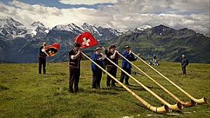

Suíça
Itália

Inglaterra
Olá!
Essa é a minha primeira página em html e irei me apresentar a você!
Eu tenho 26 anos e sou leonina, ascendente em virgem. E Tenho 3 gatos que amo mais que a mim mesma.
A Merlin é a mais velha e a adotei em 2021 quando mudei da casa da minha mãe e não aguentava mais ficar sozinha.
Posso dizer que pensei em adotar para ter um motivo para falar sozinha sem parecer tão louca. Acontece que eu me apaixonei pela Merlin, nunca tive contato com gatos e ela foi a primeira e eu me apaixonei.
Nessa época eu estava atuando em home office na minha antiga empresa e em 2023 eu tive que voltar a trabalhar presencial e a minha única gatinha começou a ficar sozinha o dia inteiro, o que devia ser bem estressante para ela, já que era acostumada a ficar comigo 24hrs por dia, até banho tomávamos juntas (praticamente).
Foi aí que adotei o Pingo. Eu me apaixonei por ele também e para a Merlin foi difícil aceitar, já que ela não saía de casa e não tinha contato com outros animais.
No entanto, quando a Merlin finalmente estava aceitando o Pingo, passado um ano, eu estava indo comprar sachê para eles quando ouvi vários gritos de crianças na rua da minha casa e um miado alto de gato filhote.
Eu automaticamente disse NÃO, porque lembro muito bem que eu já estava pensando em gatinhos filhotes e admirando demais os gatinhos de doação do Facebook.
Eu comprei os sachês e quando estava voltando para casa ouvi a conversa de uma criança com a mãe:
Criança: "Mãe eu quero o gatinho".
Mãe: "Não, não vai pegar o gato não".
Eu:"Onde o gatinho ta?"
E assim chegou o Bilbo Bolseiro. Um gatinho que cabia na palma da minha mão e que ao chegar não aceitou ficar na caixa, saiu andando pela casa toda e comendo em cada um dos potes de sachês, inclusive, expulsando os irmãos.
Claro que ele é o mais folgado de todos, mas é o caçula, um neném e já tem dois anos que não adoto mais nenhum gato. E assim continuarei, só com os três.
Agora que falei sobre os amores da minha vida, segue abaixo um pouco mais sobre mim:
|
Suíça |
 |
|
Itália |
|
|
Inglaterra |